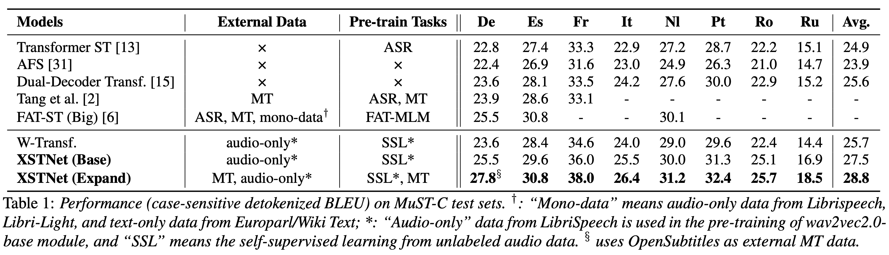

|  |
Reference Transcript:
You can go on the website, download all the design files, make them yourself.
You can go on the website, download other design files, make them yourself. [Wrong]
Sie können auf der Website die Designdateien herunterladen, sie selbst herstellen. [Correct]
Sie können auf die Website gehen, andere Designdateien herunterladen, sich selbst machen. [Wrong]
Reference Transcript:
Lights, sounds, solar panels, motors -- everything should be accessible.
Lights sounds solar panels motors everything should be accessible [Correct]
Licht, Geräusche, Solarkollektoren, Motoren — alles sollte zugänglich sein. [Correct]
Licht klingt Solarpaneele, Motoren; alles sollte zugänglich sein. [Wrong]
Reference Transcript:
Eight years ago when I was at the Media Lab, I started exploring this idea of how to put the power of engineers in the hands of artists and designers.
Vor acht Jahren, als ich im Media Lab war, begann ich zu erforschen, wie man die Kraft der Ingenieure in die Hände von Künstlern und Designern legt. [Not precise]
Vor 8 Jahren, als ich im Media Lab war, begann ich, diese Idee zu erforschen, wie man die Macht der Ingenieure in die Hände von Künstlern und Designern legte. [Correct]
@InProceedings{ye2021end,
author = {Rong Ye and Mingxuan Wang and Lei Li},
booktitle = {Proc. of INTERSPEECH},
title = {End-to-end Speech Translation via Cross-modal Progressive Training},
year = {2021},
month = aug,
}